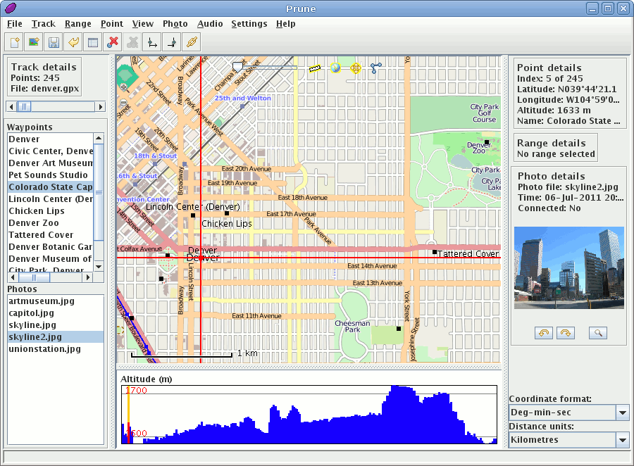

GpsPrune¶
Modifica di Tracce GPS¶
GpsPrune è uno strumento per la visualizzazione, la modifica e la conversione di coordinate di dati provenienti da sistemi GPS. Può essere usato per organizzare viaggi o per analizzare le tracce registrate da ricevitori GPS.
Utilizza immagini OpenStreetMap per mostrare le tracce e gli waypoint registrati, e offre vari strumenti per modificare, ritagliare e sfoltire i punti dati. Ha anche funzioni per correlare file fotografici e audio alle coordinate utilizzando la marcatura temporale dei file.
Se disponibile, GpsPrune utilizza Gpsbabel per leggere i dati direttamente da un ricevitore GPS, e può anche rimandare i dati modificati al ricevitore.
GpsPrune gira su Mac OSX, Windows e Linux, ed è disponibile in oltre dieci lingue differenti.
{kind=link}
Caratteristiche principali¶
Caricamento di dati da file di testo, file gpx, file kml/kmz, o direttamente da un ricevitore GPS
Cartografia di sfondo zoomabile da OpenStreetMap o altri server compatibili (come OpenCycleMap, Reit- und Wanderkarte ecc.)
Visualizzazione altimetria o velocità
Strumenti di editing per la creazione, la modifica, l’eliminazione, l’inversione e la compressione delle tracce.
Vista interattiva dei dati o esportazione in formato POV per rendering 3D, entrambe con cartografia di sfondo riportata sul terreno.
Salvataggio dei dati in file di testo, file gpx, file kml/kmz o direttamente su ricevitore GPS
Correlazione automatica tramite marcatura temporale di fotografie e file audio con i dati caricati.
Creazione di grafici come quota rispetto alla distanza o velocità rispetto al tempo
Distanze, dislivelli in salita e in discesa, stima dei tempi e altro
Risorse online come wikipedia, GPSies e previsioni del tempo locali
Dettagli¶
Sito web: https://activityworkshop.net/software/gpsprune
Licenza: GNU General Public License (GPL) versione 2
Versione Software: 19.2.0
Piattaform Supportate: GNU/Linux, Mac OSX, Windows